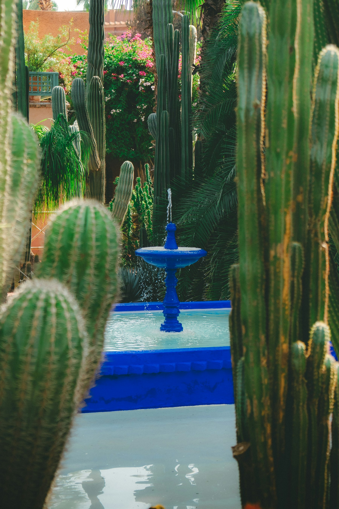
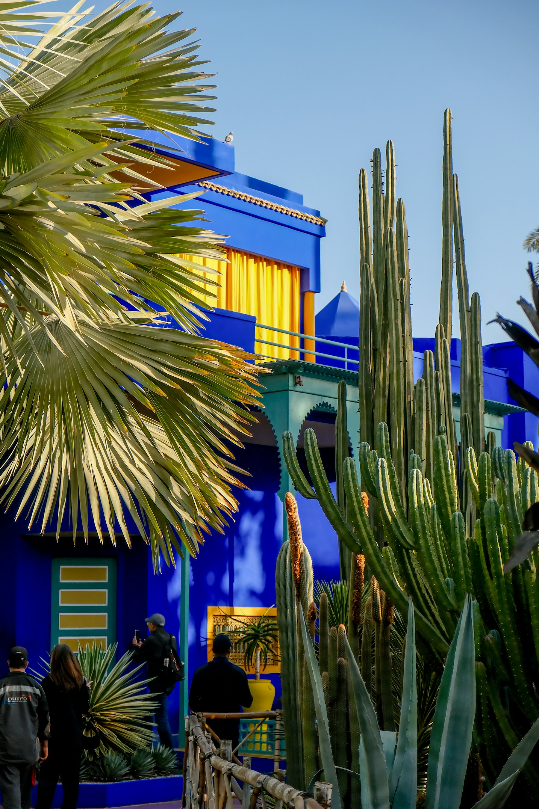
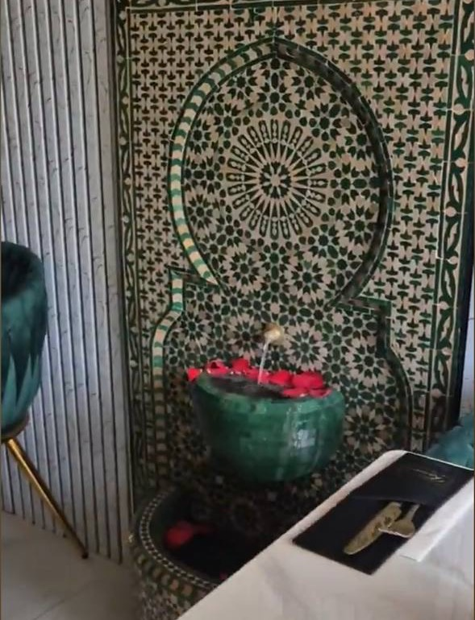

Lamb Tagine £[..]
Lamb simmered until it falls from the bone, with caramelised prunes, almonds and toasted sesame.

Family-run Moroccan restaurant · Hemel Hempstead
Slow-cooked tagines, fragrant couscous and mint tea poured from a height — the flavours of Fez, Marrakech and the Atlas, handmade from family recipes opposite the Water Gardens.
مرحبا · Marhaba — welcome
Kassem’s Lounge is a family-run corner of Morocco in Hemel Hempstead — and we mean all of it. Our recipes wander the way the country does: bread baked the way it’s baked in the old medinas of Fez, saffron and preserved lemon from the souks of Marrakech, couscous steamed hearty and high the way Amazigh families make it in the Atlas mountains, chermoula on the grill like the Atlantic quaysides of Essaouira, and dates, almonds and warm spice carried in from the edge of the Sahara.
Everything is prepared fresh, without shortcuts, from recipes passed down through generations: vegetables charred for zaalouk, lamb simmered until it falls from the bone, semolina steamed and raked by hand — and mint tea to begin, always.
“In Morocco, tea is the first word of every conversation. Sit — we’ll pour.”

A thread of blue
Morocco is a country of deep greens and warm golds — palm groves and mint, brass and desert light. But one colour follows every traveller home: the cobalt of the Jardin Majorelle. We keep a thread of it running through the lounge, set among the emerald velvet where it belongs.


The kitchen
A taste of what leaves our kitchen — cooked slowly, seasoned boldly, served the Moroccan way. Full menu and prices at the restaurant.
Lamb simmered until it falls from the bone, with caramelised prunes, almonds and toasted sesame.

Golden saffron chicken with preserved lemon and olives, gently stewed under the cone.

Char-grilled kofta skewers with buttered rice, crisp briouats and fresh chopped salad.

Khlii & eggs in the tagine, msemen and baghrir, warm bread and mint tea — all on one table.

Lamb chops, lamb shish and chicken shish over herbed rice — when one just isn’t enough.

Crisp filo under icing sugar, cinnamon and roasted almonds — best with a glass of mint tea.

أتاي · Atay — the tea ritual
“Atay is poured from a height so it sings in the glass — the higher the pour, the warmer the welcome.”
The first glass is gentle, the second is strong, the third is a friendship.
The lounge
Low light on tadelakt-smooth walls, zellige hand-cut the way the ma’allems of Fez have cut it for centuries, brass lanterns pierced by hand — and evenings of Moroccan music and live performance. Stay for one more glass; everyone does.



Visit us
51 Waterhouse Street, Hemel Hempstead, HP1 1EA
— opposite the Water Gardens
01442 954333 — walk-ins welcome, booking recommended for evenings.
Thu–Sat we open for daytime & evening sittings.
Can’t come to Morocco tonight? We deliver — find Kassem’s Lounge on your delivery app.